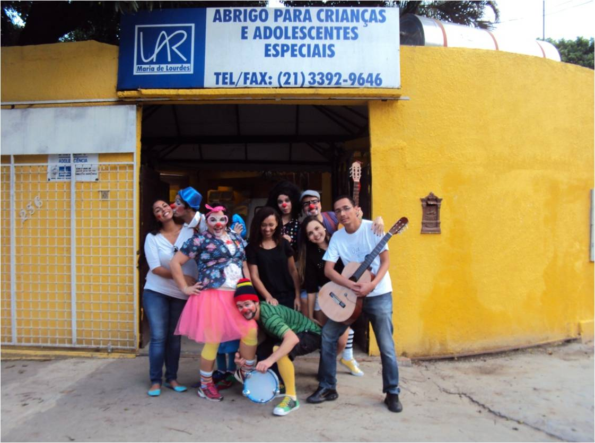
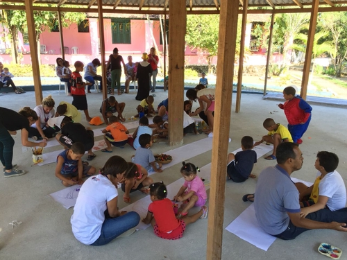

“A religião que Deus, o nosso Pai, aceita como pura e imaculada é esta:
cuidar dos órfãos e das viúvas em suas dificuldades
e não se deixar corromper pelo mundo.” [Tiago 1.27].
Três Orfanatos que precisam da sua ajuda no Rio de Janeiro
Quer trabalhar como voluntário em algum orfanato no Rio de Janeiro?
Essa atividade pode ser muito recompensadora do ponto de vista emocional.
Fazer parte da vida de crianças, que por algum motivo ficaram órfãs,
é um gesto de caridade e de solidariedade muito louvável.
E nós estamos aqui para te apresentar três orfanatos do Rio de Janeiro
que conhecemos e que tem vagas em aberto para a atuação voluntária.
Vamos nessa!

Lar Luz e Amor
O Lar Luz e Amor realiza o trabalho de acolhimento de bebês entre 1 a 4 anos,
das comunidades próximas de Del Castilho, Inanhauma e Bonsucesso.
Além de realizar o acolhimento de crianças órfãs, a organização também toma
conta de filhos de trabalhadores da região, oferecendo atividades lúdicas e
de desenvolvimento para estas crianças enquanto os pais estão no trabalho.
A história do orfanato é curiosa e tem a ver com a foto da Vó Nescy,
essa simpática senhora da foto.
Em 1994, a Vó Nescy, como era conhecida a Sra. Nescy Fernandes, atendeu ao chamado
de amigos para ir ao bairro de Bonsucesso, no Rio de Janeiro, e impedir que um grupo
de crianças fosse colocado na rua, por conta do fechamento de um abrigo. Este dia
marcaria o início da história do Lar Luz e Amor, instituição fundada pela vó Nescy
e seu marido, Francisco. O casal ainda tinha sete filhos biológicos e três adotivos.
Com o passar do tempo e o apoio de muitos amigos do Lar, a instituição atuou como
creche e abrigo, se tornando uma referência na região. Após o falecimento de Francisco
e posteriormente da Vó Nescy, a neta deles, Carolina, hoje dá continuidade ao sonho
dos avós, ajudando famílias carentes através de diversas oficinas que estimulam o
aprendizado e a cidadania.
Se você quer fazer trabalho voluntário em orfanato no Rio de Janeiro,
recomendamos fortemente que entre em contato com a organização.
Entre as atividades para trabalhar como voluntário na organização estão:
1.Realizar atividades lúdicas e de recreação para as crianças acolhidas;
2.Ajudar nas aulas de reforço escolar das crianças;
3.Ajudar nas atividades esportivas que acontecem no espaço da organização;
4.Participar dos passeios culturais que a instituição organiza com as crianças.
Enfim, as atividades são muitas e temos certeza que essa experiência vai te impactar
de forma positiva.
Poder estar ao lado de crianças, que por diversos motivos, não tem a presença dos
pais em suas vidas, pode ser uma contribuição gigante na construção de uma história mais
feliz para as crianças acolhidas.
Entre em contato com a organização.
contato@larluzeamor.org.br
Telefone: (21) 2260-7650
WhasApp: (21) 98707-4245
WhasApp: (21) 97234-0804
Endereço: Av. dos Democráticos, 1090 – Higienópolis – Rio de Janeiro/ RJ CEP 21.050-000

Lar Maria de Lourdes
O Lar Maria de Lourdes fica localizada na Taquara e iniciou suas atividades no ano de 2000. O nome da casa de acolhimento é em homenagem à Maria de Lourdes, que resolveu transformar a sua própria casa em um orfanato para poder atender crianças e adolescentes.

Hoje em dia, a organização trabalha com adultos, crianças e adolescentes que se encontram
acamados, seja por alguma doença ou por alguma condição neurológica que os levaram a esta situação.
O objetivo do Lar Maria de Lourdes é tentar, na medida do possível, oferecer a melhorar qualidade
de vida que a organização pode oferecer ao seu público atendido.
Para isso, conta com médicos, assistentes sociais, fisioterapeutas, psicólogos e com uma rede de
apoio que auxilia nas demandas do cotidiano das crianças e adolescentes acamados, como dar banho,
cuidar do ambiente do orfanato e também auxiliar em funções administrativas da organização.
É importante ressaltar que os acolhidos do Lar Maria de Lourdes não conseguem falar e não expressam
vontades como uma pessoa saudável o faria.
Por isso, o cuidado e a atenção com os acolhidos tem que ser redobrado, motivo pelo qual a equipe
técnica da organização é muito bem instruída para auxiliar em qualquer tipo de demanda que possa
surgir em relação ao bem-estar dessas pessoas.
Se você quer fazer trabalho voluntário em orfanato no Rio de Janeiro e acredita que pode auxiliar
a organização com suas demandas do dia a dia, não deixe de entrar em contato.
Naturalmente, por conta de um desconhecimento das doenças que atingem os acolhidos, esse tipo de
organização acaba recebendo menos visitantes do que em um orfanato onde as crianças não enfrentam
essas condições de saúde.
É por esse motivo que elencamos o Lar Maria de Lourdes como um orfanato para fazer trabalho voluntário.
Essas crianças, adolescentes e adultos precisam da sua ajuda e provavelmente te ensinarão muitas
coisas positivas na troca do dia a dia que vocês terão.
Endereço: Rua Pajurá, 256, Taquara, Rio de Janeiro – RJ, 22740-210, Brasil
Contatos: (21) 3392-9646
lar@larmariadelourdes.org.br
Horário de Visitação
Diariamente, de 15:00 às 17:00
Como ajudar:
A sua colaboração é muito importante e ajuda a manter o bem-estar de nossos assistidos.
Veja como contribuir e participe!
Banco do Brasil
Agência: 1579-2
Conta: 10357-8
CNPJ: 02752088/0001-23

A Minha Casa
O orfanato Minha Casa fica localizado em Campo Grande e tem uma proposta de atividades que vale a pena conhecer.

A organização trabalha em três eixos de atuação:
Atendimento a crianças em situação de vulnerabilidade social;
Atividades para famílias;
Atividades de empoderamento econômico para famílias;
Portanto, nota-se que além de oferecer serviços para as crianças abrigadas, a MINHA CASA
também se preocupa em entender a saúde emocional e financeira de famílias que vivem no entorno da organização.
Atualmente, a organização abriga a dezenas de crianças que, pelo mais diversos motivos, encontram-se sem pais e mães.
O trabalho da organização é totalmente voltado para atender essas crianças e melhorar
o quanto possível sua qualidade de vida até que encontrem pais adotivos.
Entre as atividades que a organização oferecer para as crianças estão:
Educação formal e não-formal;
Suporte Nutricional;
Suporte Médico e Odontológico;
Suporte Psicológico;
Exames de sangue;
Atividades esportivas;
Atendimento pedagógico.
Essas atividades estão abertas para serem desenvolvidas por pessoas que tenham interesse
em participar das dinâmicas da organização.
Se você quer fazer trabalho voluntário em orfanato no Rio de Janeiro, entre em contato com a
Minha Casa manifestando seu interesse em ajudar.
Você pode dar aulas de algum esporte, pode oferecer atendimento psicológico, caso tenha
formação na área e desenvolver até mesmo atividades recreativas para que as crianças possam aprender brincando.
Outras iniciativas para participar como voluntário no orfanato são participar de atividades
de ensino não-formal, leitura de livros, brincadeiras com as crianças e qualquer coisa que possa enriquecer o convívio com elas.
As atividades que você pode desenvolver como voluntário no orfanato são várias e recomendamos
que você entre em contato pelos telefones abaixo.
(21) 3394-3271
(21) 3936-1409
ou pelo formulário no site da organização:
Endereço: Estrada do Moinho, 135 – Campo Grande, Rio de Janeiro